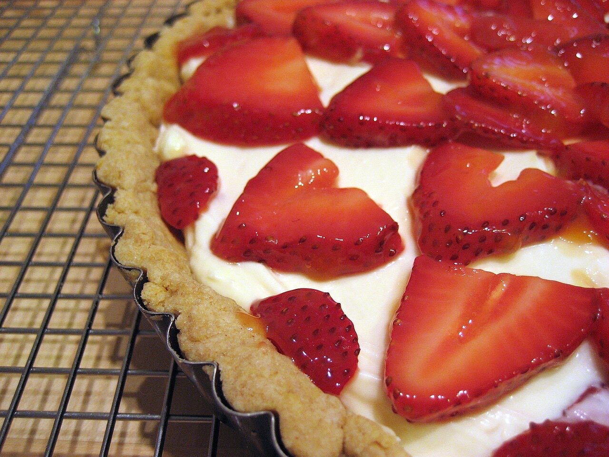
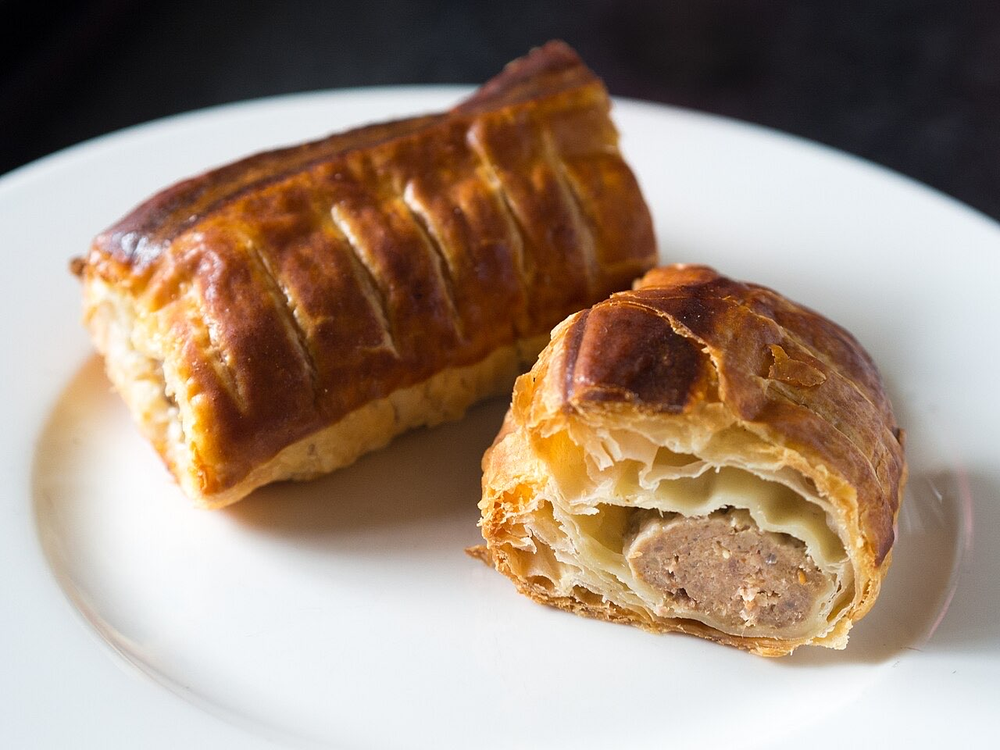

Pastelaria (2 lojas) · Centro
Pastelarias Gil (Gil Vicente e Gil Doce)
Dois cafés, um doce ponto de encontro
As Pastelarias Gil têm duas lojas, Gil Vicente e Gil Doce, no centro de Guimarães, uma delas na Rua de Santo António. Entre para um café e um doce a meio da manhã ou da tarde.
Café e pastelaria
Um café e um doce, a qualquer hora do dia.
Duas lojas
Gil Vicente e Gil Doce, no centro.
Peça da mesa
Por QR code, sem esperar pela equipa.



Fotografias ilustrativas · no site final usamos as vossas.
Pedidos por QR code
O cliente pede da mesa. O pedido chega à cozinha.
- Lê o código da mesaCom a câmara do telemóvel, sem instalar nada.
- Escolhe e pedeVê a ementa com preços, junta pratos e deixa observações.
- A cozinha recebe logoO pedido aparece no ecrã do balcão com o número da mesa.
Aponte a câmara e peça daqui
Encomendas
Faça a sua encomenda
Diga o que precisa e quando quer levantar ou receber. Respondemos por WhatsApp.
Assim chegaria a mensagem ao vosso WhatsApp. Nesta demonstração nada é enviado.
Visitar
Onde estamos
R. de Santo António 188, 4800-420 GuimarãesHorário
Horário a confirmar convosco
Proposta para Pastelarias Gil (Gil Vicente e Gil Doce)
Gostou? Isto pode ser o vosso site.
Esta página foi feita de propósito para Pastelarias Gil (Gil Vicente e Gil Doce) por João Machado, programador web aqui de Guimarães. Inclui:
- Página rápida no telemóvel, com o vosso nome e identidade
- Ementa digital com QR code e pedidos feitos da mesa
- Ementa e preços fáceis de atualizar
- Botões para ligar, WhatsApp e direções
- Pedidos de reserva ou encomenda direto para o WhatsApp
- Domínio próprio (ex.: pastelariasgil.pt) ligado ao Google Maps
Eu trato do alojamento e da manutenção. Sem compromisso.